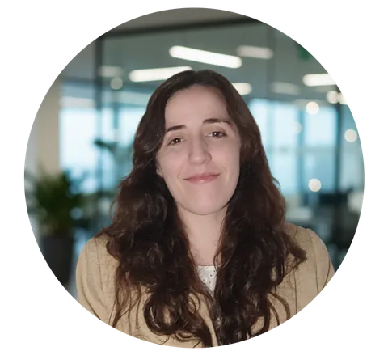

Instructional & Learning Experience Designer (LXD) | Data Analytics | Knowledge Management Diseñadora Instruccional y de Experiencias de Aprendizaje (LXD) | Análisis de Datos | Gestión del Conocimiento
7+ years of experience transforming technical and business requirements into comprehensive, dynamic and scalable learning solutions. I integrate adult learning theory with UX principles to build inclusive, user-centered learning journeys, and I rely on data-driven analysis to measure the real impact of learning on business outcomes and talent development.
Más de 7 años de experiencia transformando requerimientos técnicos y de negocio en soluciones de aprendizaje integrales, dinámicas y escalables. Integro teoría del aprendizaje de adultos con principios de UX para construir experiencias inclusivas y centradas en las personas, y me apoyo en el análisis de datos para medir el impacto real del aprendizaje en los resultados del negocio y el desarrollo del talento.
"In God we trust; all others must bring data." (W. Edwards Deming)
Each piece here represents a unique challenge in solving business and educational needs through human-centered design: from large-scale learning programs to UX-focused digital products. Click any card to open the full case study. Cada pieza representa un desafío distinto: resolver necesidades educativas y de negocio a través del diseño centrado en las personas, desde programas de aprendizaje a gran escala hasta productos digitales con foco en UX. Hacé clic en cualquier tarjeta para abrir el caso completo.

I'm an Instructional & Learning Experience Designer with more than 7 years of experience helping organizations turn complex technical and business needs into learning journeys that actually stick.
Soy Diseñadora Instruccional y de Experiencias de Aprendizaje con más de 7 años de experiencia ayudando a organizaciones a convertir necesidades técnicas y de negocio complejas en experiencias de aprendizaje que realmente perduran.
I've always believed that for learning to be effective, it has to be human-centered. That's why I bridge the gap between adult learning theory and UX principles to create experiences that are not just inclusive, but truly engaging. Whether I'm structuring intricate information or optimizing a training workflow, my goal is to use technology strategically to build bridges between knowledge and people.
Siempre creí que, para que el aprendizaje sea efectivo, tiene que estar centrado en las personas. Por eso tiendo puentes entre la teoría del aprendizaje de adultos y los principios de UX para crear experiencias que no solo son inclusivas, sino genuinamente atractivas. Ya sea estructurando información compleja u optimizando un flujo de formación, mi objetivo es usar la tecnología de forma estratégica para conectar el conocimiento con las personas.
I'm a big believer in data-driven design. I don't just create content: I look at the numbers to ensure that every learning solution I build has a real, measurable impact on business growth and talent development.
Creo firmemente en el diseño guiado por datos. No solo creo contenido: miro los números para asegurar que cada solución de aprendizaje tenga un impacto real y medible en el crecimiento del negocio y el desarrollo del talento.
Currently pursuing a Degree in Educational Technology at UTN.
Languages: Spanish (native) and English (C1, CEFR).
Actualmente curso la Licenciatura en Tecnología Educativa en UTN.
Idiomas: español (nativo) e inglés (C1, CEFR).
If you are interested in working with me, have a project in mind, or just want to say hello, please don't hesitate to contact me.
Si te interesa trabajar conmigo, tenés un proyecto en mente o simplemente querés saludar, no dudes en escribirme.